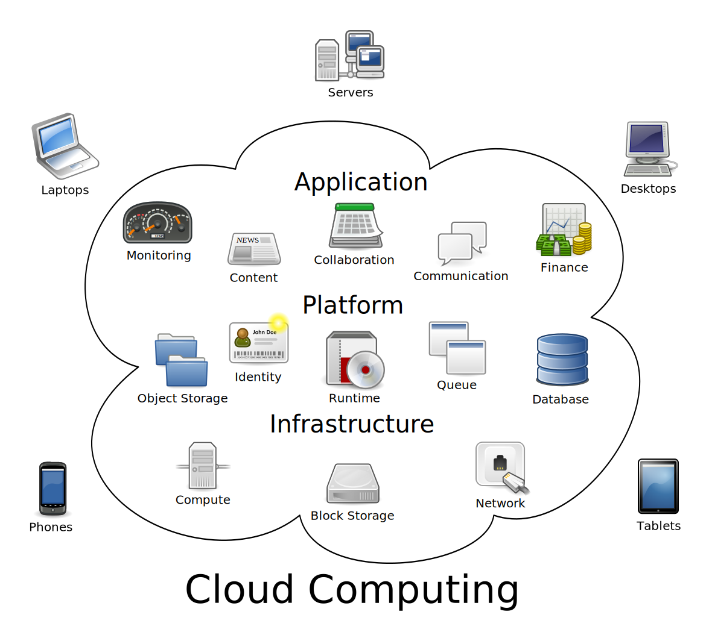

- Vision&Mission
- Direction
- Challendges
- Actions
- Q&A
议题
Vision
BEST IN SERVICE
永无止境，不断改进！
Mission
Build Cloud Service by a versatile team with
Passionate, innovate and customer oriented!
Direction
- Build full competencen team
- Clear team structure
- Clear product-level roadmap for Cloud&Service
- Refine process for production development
- First Cloud feature delivery on product
- Serve for developmet of Sony Select(PlayNow)
Build full competence team
- Will we will give up our skill on mobile client?
- NO
- Will we have clear Tech direction and roadmap for developer?
- Yes, but it need refine again.
- Will it be a very challendge times for coming days?
- YES
- What can I get during this years?
- NOT Only Tech, But Also Email, Doc, PPT, Presentation, Communication.
- Do we have clear Tecn roadmap for self-learning.
- YES, it is ongoing, it need to be updated and improved continuoursly.
Clear team structure
- SWD Arc
- Chen, Changhong (1)
- BST: Backend Service Team (7)
- Jiao, Yan; Cheng, Chris; Wei, Pengfei; Fei, Xinsheng; Zhang, bo
- Backend Analysis System
- Zheng, Lingbo; hu,jingzhi.
- WAS: Web App Store Team (2)
- Qiao, Weiqing; Wei, Devin
- NAC: Natie App Client Team (4)
- Fu, Jared; Teng, Tina; Ma, Maozeng; Chen, Min
- SPC: Sony PlayCloud Team (4)
- Bao, Pierce; Zhao, Yi; Cai, Tony; Ye,Bizhong.
Clear product-level roadmap for Cloud&Service
- Sony PlayCloud Roadmap (Defining)
- Remote Web Roadmap (Will launch)
- Native App Client (Will launch)
Refine process for production development
从一个想法或者创意开始，到用户最终从终端上开始使用，永无止境，不断改进！

First Cloud feature delivery on product
发布一个真正对用户有意义的云计算！ 
Serve for developmet of Sony Select(PlayNow)
-
S&M
-
Sony Select(PlayNow)
-
Backend Service
-
Sony TV
-
Other System
Challendges
-
Most of us do not have Service Dev background
-
We need to learn so much things in a so short time.
-
We need to do some design out of scope you have before.
-
Not only execution, but also innovation.
Actions
-
Informaiton Sharing
- 1-1 Talking with Robert for your concern things
- Career development plan
- Monthly Section Meeting.
- News letter and Email sharing.
-
Competence setup
- Technical Book and Magizines
- Technical Internal Seminar
- Milestone Summary meeting.
- UI Sense improving meeting
- Mentor-Mentee plan
- Tools setup. Pengfei.Reuse or good kits sharing.
-
Section team building.
Final
Q&A
<Thank You!>
Important contact information goes here.